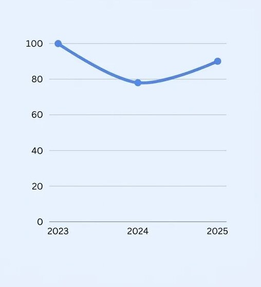
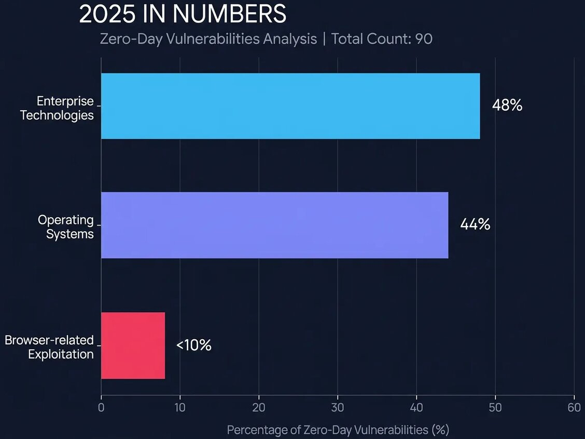

Prevention & Mitigation. Current Evidence & Trends
Prevention & Mitigation
Practical Controls:
Since a Zero-Day vulnerability may not yet have an official security update, patching alone may not be enough. To reduce risks, organizations should continually monitor systems and network traffic. It is also recommended to limit user rights, implement multi-factor authentication (MFA) and regularly create backup copies of important data.
If the vulnerability has already been discovered by security experts, developers should release a security update as quickly as possible. If a fix is not yet available, organizations should implement mitigation measures to reduce the successful exploitation of the vulnerability and reduce potential damage.
Security Development Practices:
Prevention of Zero-Day attacks begins at the software development stage. To reduce risks, developers need to do security testing, regularly check software for vulnerabilities and do code reviews.
The National Institute of Standards and Technology (NIST) Secure Software Development Framework (SSDF) standards provide practices and approaches that address organizational preparation, security of software components, creation of secure software, and quickly responding to detected errors. These methods allow not only to reduce the number of vulnerabilities in the release version of the product, but also to reduce the consequences of vulnerabilities that were undetected.
Limitations:
There are many precautions to take, but none can completely eliminate the risk. The main problem is that the vulnerability may remain unknown to developers and security specialists until it is discovered and used by attackers. Because of this, even tested software can contain hidden bugs.
Also, the implementation of most security measures requires not only time and financial costs, but also the participation of qualified specialists. Mitigation measures can only reduce the risk of an attack, but not eliminate the problem itself. The SSDF framework does not guarantee 100% security, its practices must always be adjusted to the specific organization, its risks and available resources.
Evidence & Trends
Current data

According to Google Threat Intelligence Group (GTIG), in 2025, there were 90 Zero-Day vulnerabilities that were used in real attacks before a patches were released. Looking at past years, 78 vulnerabilities were recorded in 2024, and 100 in 2023. This shows that the number of detected Zero-Day attacks remains high and has been in the range of approximately 60 - 100 cases per year in recent years.
| Year | Zero-Day vulnerabilities |
|---|---|
| 2023 | 100 |
| 2024 | 78 |
| 2025 | 90 |
Current trends

There are more attacks on enterprise technologies used by organizations. In 2025, 43 of the 90 zero-day vulnerabilities tracked (48%) affected enterprise software and devices. In 2024, it was 44% (33 vulnerabilities). Very often were attacked security and networking products.
Another trend was related to operating systems. In 2025, 39 Zero-Day vulnerabilities (44%) were found in operating systems, including desktop and mobile platforms. But Browser-Based Zero-Day exploitation dropped to 10% of all monitored cases, which Google links to improved browser security.
What this evidence shows
Zero-Day attacks remain a current threat, but their targets and attack methods are changing. In recent years, under attack were corporate systems, network devices and operating systems. But these are not absolutely all existing Zero-Day attacks, but only those that were detected and tracked. Google notes that its statistics shows known and detected attacks and may change as new data becomes available.